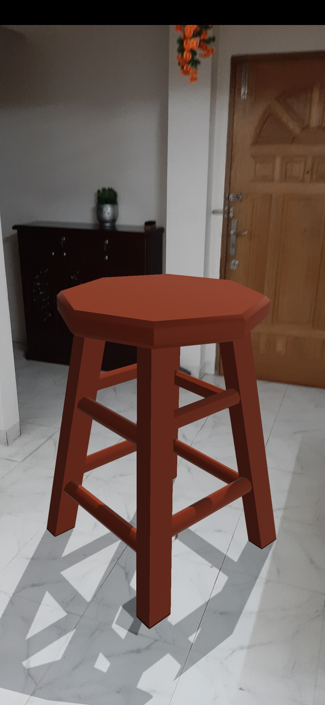

Software Requirements Specification
For
FITMENT
Prepared By:
Abrar Faisal - 1712677642
Abdulla All Noman - 1711793642
Date:20-10-2019
Department of Electrical and Computer Engineering (ECE)
North South University (NSU)
Table of Contents
- Introduction
- Purpose........................................................................................3
- Document Conventions................................................................3
- Intended Audience and Reading Suggestions.............................3
- Product Scope............................................................................3,4
- References...................................................................................4
- Overall Description
- Product Perspective.....................................................................4
- Product Functions.........................................................................4
- User Classes and Characteristics................................................5
- Operating Environment................................................................5
- Design and Implementation Constraints......................................5
- User Documentation....................................................................5
- Assumptions and Dependencies.................................................5
- External Interface Requirements
- User Interfaces.........................................................................5,6
- Hardware Interfaces....................................................................6
- Software Interfaces......................................................................6
- Communications Interfaces.........................................................6
- System Features
- System Feature 1....................................................................7-19
- System Feature 2 (and so on)...............................................19-22
- Other Nonfunctional Requirements
- Performance Requirements...................................................22-23
- Safety Requirements.................................................................23
- Security Requirements...........................................................23-24
- Software Quality Attributes.....................................................24-25
- Business Rules.........................................................................25
- Other Requirements
Appendix A: Glossary..................................................................................................25-26
Appendix B: Analysis Models........................................................................................26
Appendix C: To Be Determined List...............................................................................26
1. Introduction
The Software Requirements Specification is designed to document and describe the agreement between the customer and the developer regarding the specification of the software product requested.This document is broken into a number of sections used to logically separate the software requirements into easily referenced parts.This document is meant to discuss the features of our project FITMENT, so as to serve as a guide to the deveopers on one hand and a software validation document for the prospective client on the other. The abbreviations and definitions that are used in this SRS are also described.
1.1 Purpose
The purpose of this Software Requirements Specification (SRS) is to define and describe the functions and specifications of our project FITMENT. This Software Requirements Specification illustrates, in clear terms, the system’s primary uses and required functionality as specified by our customer so that the next developers can easily understand what we did and how to change anything if it is required.
1.2 Document Conventions
Main Section Titles
Font: Times New Roman
Face: Bold
Size: 18
Sub Section Titles
Font: Times New Roman
Face: Bold
Size: 14
Other Text Explanations
Font: Times New Roman
Face: Normal
Size: 12
1.3 Intended Audience and Reading Suggestions
The SRS is intended for software developers, designers, testers, website owners, managers and coordinators. The document is intended to be read sequentially as it is.
1.4 Product Scope
FITMENT is an online platform for buying furniture and home decor online. But it is different from other e-commerce websites because Augmented Reality buyers can get an idea of what they are going to buy and how it may look in their room through android app. When the users find a suitable place for the furniture, they can place the furniture there and then move the phone to see how the furniture looks at that position.
The seller will have to provide the specifications of a furniture. Our design team will then create a 3D model of the furniture and that will be used for augmentation. This photo will be given to the user which will float on the camera screen when the user selects that furniture. The camera will be able to detect plains. The furniture can be placed on a selected plain and it will be anchored there. The object will stay at the selected place and the user will be able to move around and see the furniture from every angle.
1.5 References
[1] IEEE Software Engineering Standards Committee, “IEEE Std 830-1998, IEEE Recommended
Practice for Software Requirements Specifications”, October 20, 1998
[2] "Syque," [Online]. Available: http://syque.com/quality_tools/tools/Tools104.htm. [Accessed 15 October 2019].
2. Overall Description
This section includes details about what is and is not expected in this FITMENT project and in this system in addition to which cases are intentionally unsupported and assumptions that will be used in the creation of this project.This section will also give an overview of the whole system. At last, the constraints and assumptions for the system will be presented.
Figure:Product Logo.
2.1 Product Perspective
There are two parts in this system: one android application and one web portal. The mobile application will be used by the buyers who will be able to buy the products and view the products in AR. The web portal will be used by both the buyers and the sellers. The buyers can buy and the sellers can upload their product descriptions.
The android application needs and version 7.0 or above. Android phones with version 7.0 or above comes with necessary hardware required for augmented reality support. The mobile app will be using the camera of the smartphone to implement the AR features.
The mobile application and the web application will both have a database to store product data and user data. The web portal will have read, write and modify access of the database but the mobile app will only have read access. All database communication will happen through internet.
2.2 Product Functions
Through the mobile apps the user will be able to buy furniture. Special feature of this app will be to see the product before buying in Augmented Reality. The users will also be able to search for a specific product with name or find it from the category menu.
The web portal will have two parts, one for the administrator and another one is for the buyers. The buyers will be able to buy furniture from here also. But the website won’t be supporting any AR feature. As a result, the web portal will be accessible from any device as it won’t have any hardware constrain. The admins of the portal will be able to add new products with details, receive orders.
2.3 User Classes and Characteristics
There are two types of users of the platform. The buyers and the admins.
The buyers will be able to use the mobile app and the web app. They can use all the features the mobile app provides.
The administrator will take product data from the sellers and will upload them on the web portal. They will not have access to any management features from the mobile application.
2.4 Operating Environment
For Android:
Disk Space: 100 MB
RAM: 1 GB
Operating System: Android 7.0
2.5 Design and Implementation Constraints
Because of online application, internet connection is a constraint. Internet connection is a must for the application to take data from the database.
Both the web portal and the mobile application will be constrained by the capacity of the database. Since the database is shared between both application it may be forced to queue incoming requests and therefor increase the time it takes to take data.
Android version is a mobile software constraint as the SDK used requires android version 7.0 and above. Also, the need of a camera, gyro, accelerometer is hardware constraint for the android application as without these the AR feature will not work.
2.6 User Documentation
User documentation will be provided Once the development is completed and a prototype is released.
2.7 Assumptions and Dependencies
One assumption for the android application is the application will be used mostly on high-end or latest phones as for a few years as the hardware requirement can only be met on those phones.
Another assumption is phones with good camera will be providing the best performance as plane detection depends on the picture quality of the camera.
Proper browser should be used for the web app and a stable internet connection is required.
3. External Interface Requirements
All inputs and outputs necessary for the requirements will be specified in this section. Hardware, Software and communication interfaces will also be characterized here.
3.1 User Interfaces
When the user enter into the apps or website for the first time, they will be landed onto the registration page. If the user is already registered he or she can select to login through a button which will bring him to a log-in page. Name, Password, Address, Phone Number will be collected from the registration page. Users should be able to login by using their email and password or through google or facebook.
If the user is already logged into the system, they will land on the home page. The home page will show the most recent uploaded products to the buyers. Buyers will be able to search the products based on title or category tags of the products.
Every user will have a profile page from where they can view or edit their user information.
When a consumer clicks on a product it will bring them to that specific product detail page. This page will contain name, retailer and description of the product. If the consumer is on the mobile app, they can also view the product via AR. This functionality will not be implemented in the web version. But on the mobile app a camera interface will open and show them the 3D model of the product.
The product page will contain a rating system and a comment section where people that previously bought the product will be able to comment about the product.
Sellers can see their previously uploaded products from the administrator interface. They can see sales information and the orders that have been placed already. They will be able to add new products with detailed information and also remove an existing product.
3.2 Hardware Interfaces
Neither the mobile application nor the web version has any special hardware requirements. So, the system will not have any hardware interface. The camera required for AR experience is assumed to be provided by the mobile phones where the app will be installed.
3.3 Software Interfaces
Both the mobile application and the website will communicate with the database via internet. The operating system will provide such interfaces. Both the platforms will consist of operations regarding read and write of data.
3.4 Communications Interfaces
The communication between the different part of the system will be handled by the operations provided by the browser or operating system.
4. System Features
This section includes the requirements that describe all the essential functions of the system.
The naming convention will follow the following conventions
FRPx – Primary functional requirement
FRPx – Secondary functional requirement

Figure: Use case diagram for fitment.
4.1 Functional Requirement 1
4.1.1 Functional requirement 1.1
ID: FRP1


Figure:Mock up for User Registration
TITLE: User RegistrationACTOR: User
PURPOSE: Register the user information
OVERVIEW: Given that a user has downloaded the mobile application, or accessed the website then the user should be able to register into the system. The user must provide Name, Password, Address, Phone Number, address and user type. User type consist of ‘buyer’ and ‘seller’.
TYPE: Primary function
PRIORITY: High
DEP: none
Actions:
| Actor Actions | System Responses |
|---|---|
| 1.Actor enters his/her Id and Password. | 2.The system validates the entered Id and password. |
| 3.Actor selects the option to register. | 4.The system takes the user to the expected sign-in or sign-up page. |
| 5.The actor register with the federated id by pressing the logo. | 6.System fetches the registration information from the device. |
Figure:Typical Events
Alternate Actions:
| Problems | Actions |
|---|---|
| Actor fails to enter the correct information for login. | System will display invalid id and password. |
| Actor decides to continue without registration | The system takes the user to the homepage. |
| Actor don't have an account. | System will ask actor to signup. |
Figure:Alternate Actions
Functional Requirement:
| Requirement Code | Detailss |
|---|---|
| Requirement-1 | Register user in short time. |
| Requirement-2 | Enable user to change Id and Password. |
Figure:Functional Requirement
ID: FRP2

Figure: Mockup for login.
TITLE: User LoginACTOR: User
PURPOSE: Login the user
OVERVIEW: Given that the user is already registered, the user will be able to login by providing the email and password.
TYPE: Primary function
PRIORITY: High
DEP: FRP1
Actor Actions:
| Actor Actions | System Responses |
|---|---|
| 1.Actor is not registered yet. | 2.Select “Already Registered” button from the registration page. |
| 3.Enter email and password. | 4.Click on login. |
Figure:Typical course of events
Alternate Actions:
| Problems | Actions |
|---|---|
| 1.Email not exist. | 2.Show error: “This email is not registered yet. Please Register first.”. |
| 3.Password does not match: “Password or email is not correct. Please retry!”. | 4.Any field left blank, show error: “All the fields must be filled up”. |
Figure:Alternate Actions
Functional Requirement:
| Requirement Code | Details |
|---|---|
| Requirement-1 | Registration required to login. |
Figure:Functional Requirement
ID: FRP3

Figure: Mockup of search.
TITLE: SearchACTOR: User - buyer
PURPOSE: Search for product
OVERVIEW: From the home page the user must be able to search for their preferred product. The search will find the match the title of the product.
TYPE: Primary function
PRIORITY: Medium
DEP: FRP2
COURSE OF EVENTS:
I) Type the search keywords
III) Click on search
ALTERNATIVE COURSE OF EVENTS:
I) Search keywords are empty, show error: “Please enter a keyword”
Actor Actions:
| Actor Actions | System Responses |
|---|---|
| 1.Type the search keywords. | 2.Click on search. |
Figure:Typical course of events
Alternate Actions:
| Problems | Actions |
|---|---|
| 1.Search keywords are empty. | 2.Show error: “Please enter a keyword”. |
Figure:Alternate Actions
ID: FRP4
TITLE: Order Product
ACTOR: User - buyer
PURPOSE: Order the product
OVERVIEW: From the product page a user will be able to click on place order. The order will be placed assuming that the payment type will be pay on delivery and address will be the address of the user.
TYPE: Primary function
PRIORITY: High
DEP: FRP2
COURSE OF EVENTS:
I) Click on Order Product
ALTERNATIVE COURSE OF EVENTS:
I) Address must be valid, Admins will check for the validity of the address and manually send SMS to the user regarding the issue.
4.1.5 Functional requirement 1.5
ID: FRP5
TITLE: Rate Product
ACTOR: User - buyer
PURPOSE: Rate and Review previously bought products
OVERVIEW: From the Product page the user can click on “Review product” button. This will pop up a window with 5 empty stars and a comment box. The user will have to click on any star which will signify the rating based on one’s index of the star. The user can additionally add a review comment into the box and submit the rating.
TYPE: Primary function
PRIORITY: Low
DEP: FRP2
COURSE OF EVENTS:
I) Select a star
II) Optionally type a comment
III) Click on submit
ALTERNATIVE COURSE OF EVENTS:
I) No stars selected, show error: “You must rate the product from 1-5”
4.1.6 Functional requirement 1.6
ID: FRP6

Figure: Augmented Reality Product View.
TITLE: See AR of the product – Mobile Application onlyACTOR: User - buyer
PURPOSE: See the product in real time with the camera of the mobile app.
OVERVIEW: From the Product page the buyer can select the view in AR button. This bring to Product AR page, where the 3D version of the product will be placed on a plane found in the camera. User will be able to move or rotate the product. The product will stay still in perspective of the surface and must not move significantly with the motion of the camera.
TYPE: Primary function
PRIORITY: High
DEP: FRP8
Actor Actions:
| Actor Actions | System Responses |
|---|---|
| Select a product from home page | Click on view product in AR |
| Place the product on a surface seen with the camera | Optionally move the product |
| Actors tap multiple times to place the object in several places. | Exit from the view |
Figure:Typical course of events
Alternate Actions:
| Problems | Actions |
|---|---|
| Surface not found, show error: “The environment is too complex to find a surface” | Wait till environment changes, before showing the 3D product |
| Not enough light, show error: “The environment doesn’t have enough light to find a surface" | Wait till environment changes, before showing the 3D product |
Figure:Alternate Actions
Functional Requirement:
| Requirement Code | Details |
|---|---|
| Requirement-1 | Detecting surface in short time. |
| Requirement-2 | Working integrated camera. |
Figure:Functional Requirement
ID: FRP7
TITLE: Profile Page
ACTOR: User
PURPOSE: View the profile page
OVERVIEW: Show the user information to the user. This information will include, name, email, phone number, address and user type. User will be able to modify any of this information except for the mail.
TYPE: Primary function
PRIORITY: Low
DEP: FRP2
Actor Actions:
| Actor Actions | System Responses |
|---|---|
| Select Profile button from home | Select any field |
| Modify the selected field. | Click on update information |
Figure:Typical course of events
Alternate Actions:
| Problems | Actions |
|---|---|
| Data not downloaded properly, show error: “Couldn’t connect to server, please check your internet connection and try again later!” | Wait till environment changes, before showing the 3D product |
Figure:Alternate Actions
Functional Requirement:
| Requirement Code | Details |
|---|---|
| Requirement-1 | Click the profile to edit profile. |
Figure:Functional Requirement
ID: FRP8

Figure: Products.
TITLE: Product PageACTOR: User
PURPOSE: View the Product page
OVERVIEW: Product page can be accessed from various other views. It is assumed that this page is accessed by clicking on a product. The information regarding that product will then be shown here. User can view the details of a product from this view.
TYPE: Primary function
PRIORITY: High
DEP: none
Actor Actions:
| Actor Actions | System Responses |
|---|---|
| Select a product | Select any functionality provided by the product page |
Figure:Typical course of events
Alternate Actions:
| Problems | Actions |
|---|---|
| Product details not downloaded in time limit of 30 seconds, show error: “Couldn’t connect to server, please check your internet connection and try again later!” | Appear retry button |
Figure:Alternate Actions
Functional Requirement:
| Requirement Code | Details |
|---|---|
| Requirement-1 | Show all types of products. |
Figure:Functional Requirement
ID: FRP9
TITLE: Administrator Login
ACTOR: Admin
PURPOSE: Login the admin
OVERVIEW: Given that the admin is already registered the admin will be able to login in trough a web portal.
TYPE: Primary function
PRIORITY: High
DEP: none
Actor Actions:
| Actor Actions | System Responses |
|---|---|
| 1.Enter email/username and password | 2.Click on login |
Figure:Typical course of events
Alternate Actions:
| Problems | Actions |
|---|---|
| 1.Email not exist, show error: “This email/user is not registered yet. Please Register first.” | 2.Password does not match: “Password or email is not correct. Please retry!” |
Figure:Alternate Actions
Functional Requirement:
| Requirement Code | Details |
|---|---|
| Requirement-1 | Any field left blank, show error: “All the fields must be filled up”. |
Figure:Functional Requirement
ID: FRP10
TITLE: Admin Dashboard
ACTOR: Admin
PURPOSE: View the admin dashboard
OVERVIEW: The admin dashboard will show sales overview, recent activity and latest orders.
TYPE: Primary function
PRIORITY: High
DEP: FRP9
Actor Actions:
| Actor Actions | System Responses |
|---|---|
| 1.Change order status | 2.View order details |
Figure:Typical course of events
Alternate Actions:
| Problems | Actions |
|---|---|
| 1.No order to show. | 2.Go to cart to add product for order |
Figure:Alternate Actions
Functional Requirement:
| Requirement Code | Details |
|---|---|
| Requirement-1 | Login first to order. |
Figure:Functional Requirement
ID: FRP12
TITLE: Product Menu
ACTOR: Admin
PURPOSE: Add new, remove or edit existing products
OVERVIEW: The admin will be able to create a new product. He or She will also be able to remove or edit existing products. Product’s 3D model file can be uploaded as well as 2D images of the product through this menu.
TYPE: Primary function
PRIORITY: High
DEP: FRP9, FRP10, FRP11
Actor Actions:
| Actor Actions | System Responses |
|---|---|
| 1.Create a new Product | 2.Edit existing Product |
| 3.Add product description | 4.Add 3D models or 2D images of the product |
Figure:Typical course of events
Alternate Actions:
| Problems | Actions |
|---|---|
| 1.No product to edit/delete. | 2. Product capacity reached: “no more products can be added!”. |
| 3.Invalid file uploaded for 3D models or 2D image: “Please upload a valid file!’. | 4. File size too big: “File is too large to upload” |
Figure:Alternate Actions
Functional Requirement:
| Requirement Code | Details |
|---|---|
| Requirement-1 | Show all available products. |
Figure:Functional Requirement
4.2 Functional Requirement 2
4.2.1 Functional requirement 2.1
ID: FRS1
TITLE: Download mobile application
ACTOR: User
OVERVIEW: A user should be able to download the mobile application through either an application store or similar service on the mobile phone. The application should be free to download.
PURPOSE: In order for a user to download the mobile application.
TYPE: Secondary function
Priority: High
DEP: None
COURSE OF EVENTS:
I) Downloads the app from google play store
4.2.2 Functional requirement 2.2
ID: FRS2
TITLE: Check Password
ACTOR: System
RAT: Match the password
DESC: Match password entered by the user during login. The inserted password will be matched against the one stored in the database.
TYPE: Secondary function
PRIORITY: High
DEP: FRS2
Actor Actions:
| Actor Actions | System Responses |
|---|---|
| 1. Get password from user | 2.Get password from databases |
| 3.Check the passwords. | 4.Match if both the passwords are the same. |
Figure:Typical course of events
Alternate Actions:
| Problems | Actions |
|---|---|
| 1.Check if there is any error. | 2.The errors will be handled by the view using this function. |
Figure:Alternate Actions
Functional Requirement:
| Requirement Code | Details |
|---|---|
| Requirement-1 | Use hash function to secure the password. |
Figure:Functional Requirement
ID: FRS3
TITLE: Get 3D model
ACTOR: System
PURPOSE: Get the 3d model of a specified product from the database
OVERVIEW: Search for the product id and find the 3D model from the database
TYPE: Secondary function
PRIORITY: High
DEP: none
Actor Actions:
| Actor Actions | System Responses |
|---|---|
| 1. Get product ID | 2.Search the product by its id in the database |
| 3.Find the 3D model. | 4. Download the 3D model. |
Figure:Typical course of events
Alternate Actions:
| Problems | Actions |
|---|---|
| 1.Internet Connection Problem, | 2.Show error “Couldn’t download the 3D model, please try again later” Appear retry button |
Figure:Alternate Actions
Functional Requirement:
| Requirement Code | Details |
|---|
Figure:Functional Requirement
ID: FRS4
TITLE: Check if User is logged in
ACTOR: System
PURPOSE: Check if user is already logged in
OVERVIEW: The system may need to check if the user is properly logged in in different scenarios. The login state may be cached in the running device.
TYPE: Secondary function
PRIORITY: High
DEP: FRS2
COURSE OF EVENTS:
I) Get user login status from device
ALTERNATIVE COURSE OF EVENTS:
II) Couldn’t access device storage, show error “Couldn’t access device memory. Check the permissions for this app”
5. Other Nonfunctional Requirements
5.1 Performance Requirements
The requirements in this section provide a detailed specification of the user interaction with the software and measurements placed on the system performance.
5.1.1 Prominent search feature
ID: FRN1
TITLE: Prominent search feature
OVERVIEW: The search feature should be prominent and easy to find for the user.
PURPOSE: In order to find the search feature easily for a user.
DEP: none
5.1.2 Usage of the search feature
ID: FRN2
TITLE: Usage of the search feature
OVERVIEW: The different search options should be evident, simple and easy to understand.
PURPOSE: In order to perform a search easily for a user.
DEP: none
5.1.3 Usage of the result in the list view
ID: FRN3
TITLE: Usage of the result in the list view
OVERVIEW: The results displayed in the list view should be user friendly and easy to understand. Selecting an element in the result list should only take one click.
PURPOSE: In order to use the list view easily for a user.
DEP: none
5.1.4 Usage of the Camera
ID: FRN4
TITLE: Usage of the camera in AR mode
OVERVIEW: The camera should be simplistic in nature, it should one or two buttons at max.
PURPOSE: In order to see the surroundings for a user without any blockage.
DEP: none
5.1.5 Response time
ID: FRN5
TAG: ResponseTime
GIST: The fastness of the search
SCALE: The response time of a search
METER: Measurements obtained from 1000 searches during testing.
MUST: No more than 2 seconds 100% of the time.
WISH: No more than 1 second 100% of the time.
5.1.6 System dependability
ID: FRN6
TAG: SystemDependability
GIST: The fault tolerance of the system.
SCALE: If the system loses the connection to the Internet or missing any sensor, the user should be informed.
METER: Measurements obtained from 1000 hours of usage during testing.
MUST: 100% of the time.
5.2 Safety Requirements
In order to ensure the users safety, we must keep the personal information, the profile of a user,users passwords etc secured and not prone to online theft.User can rely on our website and app and they are free to purchase things safely. We will create secured traffic and data protection which will ensure a smooth business operation.
5.3 Security Requirements
5.3.1 Communication Security
ID: FRN7
TAG: CommunicationSecurity
GIST: Security of the communication between the system and server.
SCALE: The messages should be encrypted for log-in communications, so others cannot get user-name and password from those messages.
METER: Attempts to get user-name and password through obtained messages on 1000 log-in session during testing.
MUST: 100% of the Communication Messages in the communication of a log-in session should be encrypted.
Communication Messages: Defined: Every exchanged of information between client and server.
5.3.2 Admin Login Security
ID: FRN8
TAG: AdminLoginAccountSecurity
GIST: Security of accounts.
SCALE: If an admin tries to log in to the web portal with a non-existing account then the admin should not be logged in. The admin should be notified about log-in failure.
METER: 1000 attempts to log-in with a non-existing user account during testing.
MUST: 100% of the time.
5.3.3 Admin Account Security
ID: FRN9
TAG: AdminAccountSecurity
GIST: Security of admin accounts.
SCALE: An admin and IP address should not be able to log-in to the web portal for a certain time period after three times of failed log-in attempts.
METER: 1000 attempts to log-in during the lock period after user account has been locked because of failed log-in attempts of three times.
MUST: The locking period should be half an hour, and during that period the log-in function is disabled.
5.3.4 User Account Security
ID: FRN10
TAG: UserCreateAccountSecurity
GIST: The security of creating account for users of the system.
SCALE: If a user wants to create an account and the desired user name is occupied, the user should be asked to choose a different user name.
METER: Measurements obtained on 1000 hours of usage during testing.
MUST: 100% of the time.
5.4 Software Quality Attributes
The requirements in this section specify the required reliability, availability, and maintainability of the software system.
5.4.1 Reliability
ID: FRN11
TAG: SystemReliability
GIST: The reliability of the system.
SCALE: The reliability that the system gives the right result on a search.
METER: Measurements obtained from 1000 searches during testing.
MUST: More than 98% of the searches.
PLAN: More than 99% of the searches.
WISH: 100% of the searches.
5.4.2 Availability
ID: FRN12
TAG: SystemAvailability
GIST: The availability of the system when it is used.
SCALE: The average system availability (not considering network failing).
METER: Measurements obtained from 1000 hours of usage during testing.
MUST: More than 98% of the time.
PLAN: More than 99% of the time.
WISH: 100% of the time.
ID: FRN13
TITLE: Internet Connection
OVERVIEW: The application should be connected to the Internet.
PURPOSE: In order for the application to communicate with the database.
DEP: none
5.4.3 Maintainability
ID: FRN14
TITLE: Application extendibility
OVERVIEW: The application should be easy to extend. The code should be written in a way that it favors implementation of new functions.
PURPOSE: In order for future functions to be implemented easily to the application.
DEP: none
ID: FRN15
TITLE: Application testability
OVERVIEW: Test environments should be built for the application to allow testing of the application’s different functions.
PURPOSE: In order to test the application.
DEP: none
5.4.4 Portability
ID: FRN16
TITLE: Application portability
OVERVIEW: The application should be portable with Android.
PURPOSE: The adaptable platform for the application to run on.
DEP: none
5.5 Business Rules
Sales of illegal products and non-furniture products are not allowed. Administrator can view all user information obtained from user registration.
6. Other Requirements
Backup and Recovery: Keep proper system wide backups and the backup cycle should be regular and frequent enough.
Appendix A: Glossary
Definitions, acronyms, and abbreviations are listed below:
| Term | Definition |
|---|---|
| User | Someone who interacts with the mobile phone application |
| Admin/Administrator | System administrator who is given specific permission for managing and controlling the system |
| Buyer | Someone who can see products and order it |
| Seller | Someone who gives full information about the product and deliver the product to the buyer |
| DEP | Dependency |
| PFR | Primary Functional Requirements |
| SFR | Secondary Functional Requirements |
| TAG | A unique, persistent identifier contained in a PLanguage statement [2] |
| GIST | A short description to help understanding [2] |
| SCALE | The scale of measurement used to quantify the statement [2] |
| METER | The process or device used to measure using the SCALE [2] |
| MUST | The minimum level required to avoid failure [2] |
| PLAN | The level at which success can be claimed [2] |
| WISH | A desirable level of achievement [2] |
Appendix B: Analysis Models
We plan to include class diagrams after the prototype is finished.
Appendix C: To Be Determined List
Collect a numbered list of the TBD (to be determined) references that remain in the SRS so they can be tracked to closure.